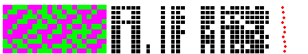

| To illustrate this process, we take a population of 10 N = 5 CA, with a
state space of 21 cells, and run 5 random initial configurations for 10 generations each. |
| In the middle
we see the genotypes of each of the 10 CA, |
| on the right their fitness averaged over 5 initial generations, |
| and on the left the last of the 5 patterns produced by the most fit of the 10 CA (live cells are green). |
|
| Here we see the corresponding picture after 20 generations. |
| Note that the genotypes now have developed many similatities: the genetic algorithm seems to have
discovered patterns with positive survival value. |
| This is an instance of Holland's schema theorem,
that useful combinations of genes are amplified in the population. |
|  |
| Click the picture for an animation of the 20 generations. |
|
| Here is the rule for the most fit CA evolved in this run of the genetic algorithm, and
the patterns evolved from initially low and initially high populations of live cells. |
|
| In both cases, the CA generates a state of about half live and
half dead cells. |
| The best solution it has found, in this short experiment, is to always be about half
wrong. |
| What would we find with a larger population, larger state space, more iterations or
CA with larger neighborhoods? |